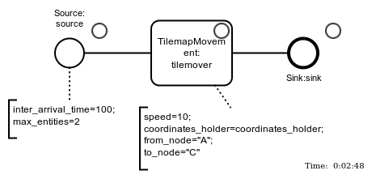

Introducing Casymda
A Python-Package for Animated Discrete-Event-Simulation based on BPMN and SimPy

Discrete Event Simulation is a widespread tool for analysis and design of logistics systems.
However, most industrial applications are realized using commercial simulators, and existing open-source alternatives still seem to lack some of the convenient features commercial packages are offering.
The Casymda-package strives to add some of these features, building on established standards such as BPMN and SimPy.
This post will introduce main features and show how to run a simple example.
Get the repo.
Existing Discrete Event Simulation Packages
Current applications of DES go beyond the traditional usage for systems planning. They include more operational use-cases such as virtual commissioning or short-term forecasts & optimization. Consequently, simulation models are getting integrated tightly into other IT-systems. This allows to increase process transparency and to improve our means to analyze, control, and optimize system performance.
Most industrial simulation uses are still based on commercial packages.
And there are good reasons for this.
If you’ve already worked with commercial DES packages (such as Anylogic/Arena/ExtendSim/FlexSim/PlantSimulation/Simio/…YouNameIt), you probably learned to like some typical characteristics:
- block-based graphical modeling of processes
- (often) vendor-specific scripting possibilities to define custom behavior and non-standard procedures (this is where things get fun)
- (3D) visualization / animation capabilities for debug / validation / presentation (fun as well, most of the time)
- domain-specific libraries with objects providing pre-built industry-specific behaviors (configuration and customization)
- interfacing options: spreadsheets, databases, socket, COM,… (what’s the last one?)
However, there are a couple of open-source alternatives too.
Even though they tend to lack some of the commercial features described above, there are upsides such as better scalability and simplified interfacing.
Related to Python there are (at least) two popular DES packages: Salabim and SimPy. Both are not only free and open-source, but even built on top of the standard library of one of the world’s most popular programming languages.
Casymda: Features & Implementation
Based on SimPy3,
Casymda adds bits of complementing functionality to gain some of the modeling convenience of commercial “block-based” DES-packages.
It facilitates the usage of bpmn-process-descriptions to generate corresponding simulation-model python-code.
.bpmn-files (basically xml) can easily be created with the
Camunda-Modeler.
This graphical modeling helps to maintain an overview of the high-level model-structure.
Generated Casymda-models also include a generic, token-like animation of simulated processes out-of-the-box, ready to be run in a web-browser.
For presentation and debugging, animations can be paused and their speed can be changed dynamically.
Solely animation-related events are not scheduled if the simulation is run without visualization.
This maximizes the execution speed - which becomes especially important when a high number of runs is necessary.
Further features of Casymda include simulated movements along shortest paths in a 2D-tilemap-space, and gradual typing for development convenience (checkout
pyright if you are using
vscode).
Let’s have a quick look at a simple example Casymda-model, illustrating some basic ideas.
The animation below shows a simple process consisting of 3 Casymda-blocks: Entities are created in a Source, pass a process-step called TilemapMovement, and leave the system via a Sink.

To run the example just enter the following command from within the repository and visit http://localhost:5000:
docker-compose up web-animation-tilemap-simple-process
Created block-objects can be parametrized with arguments provided as text-annotations (e.g. the inter_arrival_time=100 [seconds] of the entities at the source).
The naming of blocks is parsed following the pattern ClassName:instance_name.
The default process-animation includes additional information on the processed entities and on the state of each block.
The way in which animations are created by Casymda is inspired by the Anylogic implementation. A web-server is running the actual simulation, and providing frame information to be rendered by a browser. The corresponding Casymda functionality is implemented using flask and pixijs.
Below you can find an tilemap-animation of the TilemapMovement process step of the model. As specified in the text-annotation, entities move from_node="A", to_node="C".
Tilemaps can be provided in .csv format, with field values indicating possible origin/destination nodes (e.g. A, B, and C), passable nodes (0), and impassable nodes (1).
The size of each tile is configured as part of the tilemap configuration.
Shortest paths and distances between all origin/destination nodes are computed using
networkx.
To run the tilemap animation example just enter the following command and visit: http://localhost:5000
docker-compose up web-animation-tilemap-simple
Additional resources
For additional information, feel free to have a look at other projects built with Casymda (German).
Interested in machine-learning? The next post will show how to use a Casymda-model to train a reinforcement learning algorithm to solve a production logistics problem - stay tuned ;)